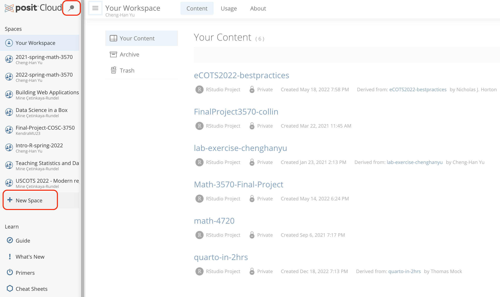
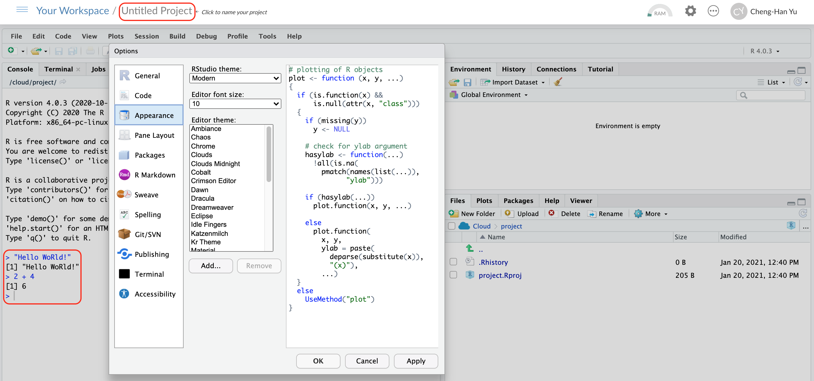
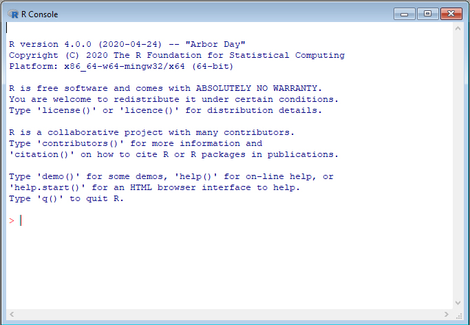

3 Tool foR Data
This chapter provides a broad overview of the R language that will get you programming right away. The tool I recommend is Posit Cloud which is a free cloud coding environment for R and Python users. A step-by-step guide will be provided. Once the setup is complete, some basic R programming and data types are introduced.
3.1 Let’s get equipped with our tools!
Posit Cloud


R and Python are popular programming languages for statistical analysis and data science.
Posit Cloud offers a could computing environment that lets you access data science tools right in your browser, and no installation or complex configuration is required.
In Posit Cloud, you can generate a data science project using the integrated development environment (IDE) RStudio or JupyterLab/Jupyter Notebook. These IDEs are software for efficiently writing computer programs. For R users, RStudio is recommended because it provides many useful functionalities specifically for R programming language.
One of the advantages of using Posit Cloud is that you can implement R/Python programs without installing R/Python and the IDE locally on your laptop! Everything can be done in the cloud using web browsers. In other words, you can get assess to your code and any files in your projects on any computer. Also, Posit Cloud lets you do, share and learn data science online for free! Moreover, Posit Cloud prepares everything you need for doing statistics and data science. You don’t need to worry about any installation or configuration issues that you may encounter when you are trying to get your local machine ready for programming in R or Python. Go to https://posit.cloud/ and log in. Then we are all set.
üòû Getting everything ready locally: Lots of friction
- Download and install R/Python
- Download and install IDE
- Install wanted R/Python packages:
- tidymodels
- tidyverse
- NumPy
- …
- Load these packages
- Download and install tools like Git
ü§ì Posit Cloud: Much less friction

- Go to https://posit.cloud/
- Log in
Please follow the steps below to sign up Posit Cloud.
Sign up Posit Cloud
New Projects
Once you have done the registration and log in successfully, you should be able to see a page like the one below. To get a IDE and create a new project, click New Project in the top right corner as shown above.

Workspaces
When you create an account on Posit Cloud, you get a workspace of your own. You can add a new workspace (click + New Space in sidebar) and control its permissions.

First R Code in Posit Cloud!
We will be using RStudio as our main IDE for coding in R.

More Tips
For more help, read the Posit Cloud guide.

3.2 Working in Posit Cloud
Panes
In RStudio, there are 4 main panes, source pane, console pane, pane for environment/history and version control, and the pane for files, plots, packages and help page. Source pane is where you write your code. Your code will not be evaluated or interpreted until you “run” them or source them to the console. When your code is long, write your code in R scripts in the Source, so that the code can be saved and reused later. You type code into the Console if the code is short or you want to do some quick calculations or analysis. The code you type in the Console will not be saved in a script. In the environment/history, you can check any objects you create in the R environment and you can also view your command history in the history tab. You will see how the pane for file/plot/package/help can be used as we learn more about RStudio.

Source Pane
R Script
An R script is a .R file that contains R code. To create an R script, go to File > New > R Script, or click the green-plus icon on the top left corner and select R Script.
Here you see in this r script, I create two objects x and y, and I also load the data mtcars into R environment. Don’t worry if you don’t know these syntax. You will learn basic R syntax and programming later.

Python Script
A Python script is a .py file that contains Python code. To create a Python script, go to File > New > Python Script, or click the green-plus icon on the topleft corner and select Python Script. Here I print the string Hello, World!", create an string object b storing Hello, World!", and then print the 3rd to 4th letter of the string.

Run Code
-
Run : run the current line or selection of code.
-
ctrl + enter(Win) orcmd + enter(Mac)
-
-
Icon to the right of Run : re-run the previous code.
-
alt + ctrl + p(Win) oroption + cmd + p(Mac)
-
-
Source : run all the code in the R script.
-
shift + ctrl + s(Win) orshift + cmd + s(Mac)
-
-
Source with Echo : run all the code in the R script with the code printed in the console.
-
shift + ctrl + enter(Win) orshift + cmd + enter(Mac)
-
Run Python Code
- Running Python code may require you to update some packages. Please say YES!
- When you run the Python code in the R console, the console will switch from R to Python.
- Type
quitin the Python console to switch back to the R console.

Environment Tab
The (global) environment is where we are currently working. Anything created or imported into the current R/Python session is stored in our environment and shown in the Environment tab. After we run the R script from Figure 3.5, the following objects are stored in the environment:
- Data set
mtcars - Object
xstoring integer values 1 to 10. - Object
ystoring three numeric values 3, 5, 9.

After we run the Python script from Figure 3.6, the following object is stored in the environment:
- Object
bstoring a stringHello World!
History Tab
The History tab keeps a record of all previous commands.
- Save icon: save all history to a file
- To Console: send the selected commands to the console.
- To Source : inserted the selected commands into the current script.
Tip
In the console pane, use ⬆️ to show the previous commands.
R Packages üì¶
R packages are a collection of reusable R functions, code and data. When we start an R session, only built-in packages like base, stats, graphics, etc. are available. Installing packages is an easy way to get access to other data and functions. Currently there are about 20 thousand packages on CRAN (The Comprehensive R Archive Network). In this book, we won’t use many packages because the basic R functions can sufficiently solve our statistics problems. Not really need more sophisticated functions in other packages.
Installing R Packages
To install a package, such as the ggplot2 package, we use the command
install.packages("ggplot2")A different option in the right-bottom pane is Packages > Install.


Loading R Packages üì¶
To use any function or data in ggplot2, we write ggplot2:: followed by the name of the function or data.
ggplot2::ggplot(ggplot2::mpg,
ggplot2::aes(x = displ, y = hwy,
colour = class)) +
ggplot2::geom_point()You should get an error message like
Error in ggplot(mpg, aes(x = displ, y = hwy, colour = class)) :
could not find function "ggplot"Your computer has the source code and data of the ggplot2 package after you install it. However, without adding ggplot2::, R does not recognize the functions and data in the ggplot2 package unless we load the package into your R working environment.
We can load a R package into our R session using the command library(). With library(ggplot2), R knows the function ggplot and data mpg are from the ggplot2 package, and we don’t need to add ggplot2:: in front of them anymore.
library(ggplot2)
ggplot(mpg, aes(x = displ,
y = hwy,
colour = class)) +
geom_point()Help
What if you don’t know how a function works or what a data set is about ❓
üëâ Simply type ? followed by the data name or function name to get more information.
?mean
?mtcarsA document will show up in the Help tab in the bottom-right pane, teaching you how to use the function or explaining the data set. An example is shown for the mpg data set in Figure 3.9 below.
3.3 Install R and RStudio to Your Computer
If you would like to install R and RStudio to your local computer, the step-by-step procedure is provided in this section. Free to skip it and go to the next section if Posit Cloud works perfectly for you.
Install R
Step 1
- Go to https://cloud.r-project.org.
- Click Download R for [your operating system].

Step 2
- If you are a Mac user, you should see the page shown below in Figure 3.11.
- You are recommended to download and install the latest version of R (now R-4.3.1) if your OS version allows to do so.
- Otherwise, choose a previous version, such as R-3.6.3.
- If you are a Windows user, after clicking Download R for Windows, please choose base version and then click Download R-4.3.1 for Windows.
Step 3
- Once you successfully install R, when you open R, you should be able to see the following R terminal or console:


Welcome to the R World!
Now you are ready to use R for statistical computation. You can use R like a calculator. After typing your formula, simply hit enter and you get the answer!
Install RStudio
Step 1
- In the Posit website, please choose Products > RStudio IDE as shown in Figure 3.1.
Step 2
- In the RStudio Desktop tab, Click DOWNLOAD RSTUDIO.
Step 3
The page will automatically detect your operating system and recommend a version of RStudio that works the best for you that is usually the latest version.
- Click DOWNLOAD RSTUDIO DESKTOP FOR [Your OS version] (Figure 3.15).
- Follow the standard installation steps and you should get the software.
- Make sure that R is installed successfully on your computer before you download and install RStudio.
RStudio Screen
When you open RStudio, you should see something similar to Figure 3.16 below. If you do, congratulations! You can now do any statistical computation in R using RStudio locally on your computer.

3.4 Operators
We are already equipped with the tools we need for doing statistics in this course. Now it’s time to program in R. We are going to go through basic R syntax and its commonly used data structures. This introduction is a must because we will be using R throughout the book. If you are already familiar with basic R syntax, feel free to move to the next chapter.
R is a Calculator
First, as many other languages, R is a calculator. We can do basic arithmetic operations using R.
Arithmetic Operators
Basic arithmetic operators are shown in the table below. Most symbols are intuitive. To get the remainder of division, we use two percentage symbols. To get the quotient of division, we use percent, slash and percent symbol.
Examples
Here are some examples. Very simple. But keep the PEMDAS rule in mind, the order of operations. We do operations on parenthesis first, then exponentiation, then multiplication/division and then addition/subtraction.
2 + 3 * 5 + 4
# [1] 21
2 + 3 * (5 + 4)
# [1] 29R Does Comparisons
Logical Operators
Here are some commonly used comparison and logical operators. R uses ! to negate the result, vertical bar | for “or” and & for “and”. There is a R buil-in function isTRUE() to test if an object x is TRUE.

Examples
5 <= 5
# [1] TRUE
5 <= 4
# [1] FALSE
# Is 5 is NOT equal to 5?
5 != 5
# [1] FALSE## Is TRUE not equal to FALSE?
TRUE != FALSE
# [1] TRUE
## Is not TRUE equal to FALSE?
!TRUE == FALSE
# [1] TRUE
## TRUE if either one is TRUE or both are TRUE
TRUE | FALSE
# [1] TRUEBuilt-in Functions
R has lots of built-in functions, especially for mathematics, probability and statistics. No importing other modules or libraries is required. These functions are pretty similar to the MATLAB or Python functions. We’ll learn more about them together when we are actually doing probability and statistics.

Examples
Commenting
We use # to add a comment so that the text after # is not read as an R command. Writing (good) comments is highly recommended. Comments help readers, and more importantly yourself, understand what the code is doing. They should explain the why, not the what.

Objects and Funtions in R
To understand computation in R, two slogans are helpful:
Everything that exists is an object.
Everything that happens is a function call.
– John Chambers, the creator of the S programming language.
We have made lots of things happen! Even arithmetic and logical operators are functions!
`+`(x = 2, y = 3)
# [1] 5
`&`(TRUE, FALSE)
# [1] FALSECreating Variables
A variable stores a value that can be changed according to our need. In R it is highly recommended üëç using the <- operator to assign a value to the variable. 1
For example, we create an object, value 5, and call it x, which is a variable. We type the variable name to see the value of the object stored in the variable.
x <- 5
x
# [1] 5We can reassign any value to the variable we created. We can also perform any operations on variables. Variables can also be used in any built-in functions too.
(x <- x + 6)
# [1] 11
x == 5
# [1] FALSE
log(x)
# [1] 2.4
Bad Naming
- ❌ Unless you have a very good reason, don’t create a variable whose name is the same as any R built-in constant or function!
- üòü It causes lots of confusion when your code is long and when others read it.
pi is a R built-in constant, the ratio of the circumference of a circle to its diameter. abs(x) is a built-in function for calculating the absolute value of x. Please NO NOT do assignment like the following unless you have a very strong reason to do so. The bad assignment or naming forces pi and abs both to be equal to 20 that causes lots of confusion.
## THIS IS BAD CODING! DON'T DO THIS!
pi
# [1] 3.14
(pi <- 20)
# [1] 20
abs
# function (x) .Primitive("abs")
(abs <- abs(pi))
# [1] 203.5 Object Types
Types of Variables
We know we can create R objects, right? And objects may have different types. Object Type plays an important role in data analysis, because it affects which model we should use and which functions we should use to manipulate our data.
We use R command typeof() to check which type a variable belongs to. Common types include character, double, integer and logical. To check if it’s of a specific type, we can use is.character(), is.double(), is.integer(), is.logical().
Variable Types in R and in Statistics
Type character and logical correspond to categorical variables. Type logical is a special type of categorical variables that has only two categories (binary). We usually call it a binary variable.
Type double and integer correspond to numerical variables with an exception discussed later. Type double is for continuous variables, and type integer is for discrete variables.
3.6 R Data Structures
(Atomic) Vector
To create a vector, we use command c(), which is short for concatenate or combine. The key property is that all elements of a vector must be of the same type.
In the example, we learn that TRUE and FALSE can be written as T and F. To check how many elements in a vector, we use length(). So length(dbl_vec) returns 3. The command str() is useful when we want to quickly get a compact description of any R object of any data structure. dbl_vec is a numerical vector that has three elements whose values are 1, 2.5, and 4.5.
Operations on Vectors
We can do the same operations on vectors that we do on a scalar variable which can be viewed as a vector of length 1. All operations happen element-wisely. We can also use a function on a vector if the fucntion accepts vectors, for example, log() and sqrt().
# Vector multiplication
v1 * v2
# [1] 12 800
# Vector division
v1 / v2
# [1] 0.75 0.08
sqrt(v2)
# [1] 2 10Recycling of Vectors
If we apply arithmetic operations to two vectors of unequal length, the elements of the shorter vector will be recycled to complete the operations.
In the example, v1 * 2 means that each element in v1 is multiplied by 2. So it is equivalent to multiply by a vector of 2 of the same length of v1. v3 becomes c(4, 11, 4, 11) when doing the operation v1 + v3.
Subsetting Vectors
To extract element(s) in a vector, use a pair of brackets [] with element indexing. The indexing starts with 1. We can put a sequence of numbers inside the brackets to extract multiple elements. For example, We can use the vector c(1, 3) to extract the first and the third element. If we want to extract all but a few elements, just put a negative sign before the vector of indices. For example v1[-c(2, 3)] keeps all the elements except the second and the third one.
v1
# [1] 3 8 4 5
v2
# [1] 4 100
## The first element
v1[1]
# [1] 3
## The second element
v2[2]
# [1] 100Factor
A vector of type factor can be ordered in a meaningful way, but difference is meaningless. So it is ordinal level of measurement and it is for categorical data.
We create a factor by factor(). Be careful! It is a type of integer, not character! üò≤ üôÑ
Because a factor is an ordered vector, there is a level associated with it. Each level represents an integer, and by default they are ordered from the vector alphabetically. Here, the level of fac from the lowest to highest is “high” “low” “med”. R stores a level using integers. So “high” is 1, “low” is 2, and “med” is 3.
If we check its structure using str(), it tells us it is a factor with 3 levels, and the first element is “med” which is the third level of the factor, so its number is 3. The second element is “high”, corresponding to the level level, so its number is 1. The “low” has the number 2 because it is the second level.
Clearly, ordering a factor alphabetically is not what we want here because the levels and integers do not match the meaning of category in the factor. We can specify the level we want using the argument levels in the factor() function. For example here, we tell R that the level of this factor, from the lowest to highest is “low”, “med”, “high. And now the factor is correctly ordered showing 2, 3, 1 here.
fac <- factor(c("med", "high", "low"))
typeof(fac)
# [1] "integer"
levels(fac)
# [1] "high" "low" "med"
str(fac)
# Factor w/ 3 levels "high","low","med": 3 1 2
order_fac <- factor(c("med", "high", "low"), levels = c("low", "med", "high"))
str(order_fac)
# Factor w/ 3 levels "low","med","high": 2 3 1List (Generic Vectors)
Lists are different from vectors. Elements can be of any type, including lists themselves.
We construct a list by using list() instead of c(). For example, we create a list of 3 elements of different types, integer, charactor, and logical respectively. Elements are separated by a comma.
The first and third elements are vectors, and the second element is a one single charactor. The first element has the name idx, and the second and third elements have no name.
Subsetting a List
This is where we should pay more attention to. When we subset a list, it may return an element of the list, or it returns a sub-list of the list. Let’s see how it happens.
We can subset a list by name or by indexing. Suppose we want the first element of the list, we can get it by its name using x_lst$idx. We can also obtain it by using indexing like x_lst[[1]] because we want the first element. Notice that the way we subset a list returns an integer vector, the real first element of the list, not a list.
Let’s see another case on the right. We can also subset by name using single pair of brackets, and put the name inside the brackets with quotation marks. Or we can subset by indexing, using a single pair of brackets instead. And you see what happened? The way we subset a list here returns a sub-list, not the element itself.
Please be careful when subsetting a list. If you want a vector, use $name or [[number]]. If you want to keep it as a list, use ["name"] or [number].
## subset by name (a vector)
x_lst$idx
# [1] 1 2 3
## subset by indexing (a vector)
x_lst[[1]]
# [1] 1 2 3
typeof(x_lst$idx)
# [1] "integer"## subset by name (still a list)
x_lst["idx"]
# $idx
# [1] 1 2 3
## subset by indexing (still a list)
x_lst[1]
# $idx
# [1] 1 2 3
typeof(x_lst["idx"])
# [1] "list"We know images speak louder than words. Here you go.

If list
xis a train carrying objects, thenx[[5]]is the object in car 5;x[4:6]is a train of cars 4-6.— @RLangTip, https://twitter.com/RLangTip/status/268375867468681216


Matrix
A matrix is a two-dimensional analog of a vector. We use command matrix() to create a matrix. By default, R creates a matrix column by column. In other words, R is a column major language.
Subsetting a Matrix
To extract a sub-matrix, use the same indexing approach as vectors on rows and columns. Because a matrix has row index and column index, we use comma , to separate row and column index of a matrix. For example, mat[2, 2] extracts the element of the second row and second column.
When we leave row index blank, and specify 2 in column index, mat[, 2] returns all rows and 2nd column, and mat[, 2] automatically becomes a vector.
mat
# [,1] [,2]
# [1,] 1 4
# [2,] 2 5
# [3,] 3 6
mat[, 2]
# [1] 4 5 6## 2nd row and all columns
mat[2, ]
# [1] 2 5
## The 1st and 3rd rows
mat[c(1, 3), ]
# [,1] [,2]
# [1,] 1 4
# [2,] 3 6Binding Matrices
We can generalize c() used in vectors to cbind() (binding matrices by adding columns) and rbind() (binding matrices by adding rows) for matrices. When matrices are combined by columns, they should have the same number of rows. When matrices are combined by rows, they should have the same number of columns.
Data Frame: The Most Common Way of Storing Data
In fact, the data matrix we discussed before can be and should be stored as a data frame in R.
A data frame is of type list of equal-length vectors, having a 2-dimensional structure. It is more general than a matrix in that different columns can have different types. Each column vector is an element of the list.
To create a data frame, we use data.frame() that takes named vectors as inputs.
## data frame w/ an dbl column named age and char column named gender
(df <- data.frame(age = c(19, 21, 40), gender = c("m", "f", "m")))
# age gender
# 1 19 m
# 2 21 f
# 3 40 m
## a data frame has a list structure
str(df)
# 'data.frame': 3 obs. of 2 variables:
# $ age : num 19 21 40
# $ gender: chr "m" "f" "m"Data frames must set column names, or they are ugly and non-recognizable.
data.frame(c(19, 21, 40), c("m","f", "m"))
# c.19..21..40. c..m....f....m..
# 1 19 m
# 2 21 f
# 3 40 mProperties of Data Frames
Data frame has properties of matrix and list.
## rbind() and cbind() can be used on df
df_r <- data.frame(age = 10, gender = "f")
rbind(df, df_r)
# age gender
# 1 19 m
# 2 21 f
# 3 40 m
# 4 10 f
df_c <- data.frame(col = c("red","blue","gray"))
(df_new <- cbind(df, df_c))
# age gender col
# 1 19 m red
# 2 21 f blue
# 3 40 m graySubsetting a Data Frame
When we subset data frames, we can use either list or matrix subsetting methods.
df_new
# age gender col
# 1 19 m red
# 2 21 f blue
# 3 40 m gray
## Subset rows
df_new[c(1, 3), ]
# age gender col
# 1 19 m red
# 3 40 m gray
## select the row where age == 21
df_new[df_new$age == 21, ]
# age gender col
# 2 21 f blue## Subset columns
## like a list
df_new$age
# [1] 19 21 40
df_new[c("age", "gender")]
# age gender
# 1 19 m
# 2 21 f
# 3 40 m
## like a matrix
df_new[, c("age", "gender")]
# age gender
# 1 19 m
# 2 21 f
# 3 40 m
str(df["age"]) ## a data frame with one column
# 'data.frame': 3 obs. of 1 variable:
# $ age: num 19 21 40
str(df[, "age"]) ## becomes a vector by default
# num [1:3] 19 21 403.7 Exercises
# ==============================================================================
## Vector
# ==============================================================================
poker_vec <- c(170, -20, 50, -140, 210)
roulette_vec <- c(-30, -40, 70, -340, 20)
days_vec <- c("Mon", "Tue", "Wed", "Thu", "Fri")
names(poker_vec) <- days_vec
names(roulette_vec) <- days_vec- Vector
The code above shows a Marquette student poker and roulette winnings from Monday to Friday. Copy and paste them into your R and complete problem 1.
- Assign to the variable
total_dailyhow much you won or lost on each day in total (poker and roulette combined). - Calculate the winnings overall
total_week. Print it out.
# ==============================================================================
## Factor
# ==============================================================================
# Create speed_vector
speed_vec <- c("medium", "low", "low", "medium", "high")- Factor
-
speed_vecabove should be converted to an ordinal factor since its categories have a natural ordering. Create an ordered factor vectorspeed_facby completing the code below. SetorderedtoTRUE, and setlevelstoc("low", "medium", "high"). Printspeed_fac.
# ==============================================================================
## Data frame
# ==============================================================================
# Definition of vectors
name <- c("Mercury", "Venus", "Earth", "Mars", "Jupiter", "Saturn",
"Uranus", "Neptune")
type <- c("Terrestrial planet", "Terrestrial planet", "Terrestrial planet",
"Terrestrial planet", "Gas giant", "Gas giant",
"Gas giant", "Gas giant")
diameter <- c(0.375, 0.947, 1, 0.537, 11.219, 9.349, 4.018, 3.843)
rotation <- c(57.63, -242.03, 1, 1.05, 0.42, 0.44, -0.73, 0.65)
rings <- c(FALSE, FALSE, FALSE, FALSE, TRUE, TRUE, TRUE, TRUE)- Data Frame
Data frames have properties of lists and matrices, so we skip lists and matrices and focus on data frames. You want to construct a data frame that describes the main characteristics of eight planets in our solar system. You feel confident enough to create the necessary vectors: name, type, diameter, rotation and rings that have already been coded up as above. The first element in each of these vectors corresponds to the first observation.
- Use the function
data.frame()to construct a data frame. Pass the vectorsname,type,diameter,rotationandringsas arguments todata.frame(), in this order. Call the resulting data frameplanets_df.
- Use
str()to investigate the structure of the newplanets_dfvariable. Which are categorical (qualitative) variables and which are numerical (quantitative) variables? For those that are categorical, are they nominal or ordinal? For those numerical variables, are they interval or ratio level? discrete or continuous? - From
planets_df, select the diameter of Mercury: this is the value at the first row and the third column. Simply print out the result. - From
planets_df, select all data on Mars (the fourth row). Simply print out the result. - Select and print out the first 5 values in the
diametercolumn ofplanets_df. - Use
$to select theringsvariable fromplanets_df. - Use (f) to select all columns for planets that have rings.
https://colinfay.me/r-assignment/ for more discussion about why we use arrow as an assignment operator in R.↩︎